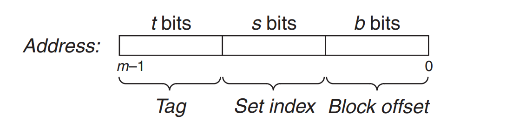
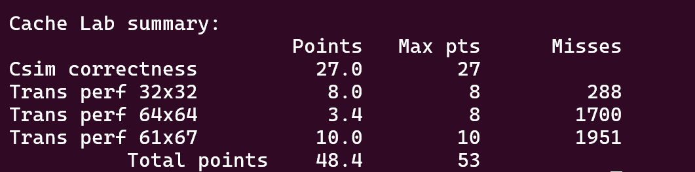

本 Lab 主要考察对计算机高速缓存（Cache）机制的理解，以及如何针对 Cache 进行程序的优化，对应知识点为书中的 6.4 ~ 6.6 节内容。
Part A: Writing a Cache Simulator
思路
基本流程
Part A 需要实现一个 Cache 模拟器，能够根据 valgrind 工具所生成的访存跟踪数据，模拟在特定参数的 Cache 环境下的命中（hits）次数、不命中（misses）次数和置换（evictions）次数，目标是实现与 csim-ref 同等的功能。模拟器需要具备的几个功能模块如下：
接下来分别对它们进行介绍。
命令行参数解析
根据实验手册的提示，可以使用 getopt 函数进行命令行参数的解析。另外，如果需要支持长选项（形如 --opt arg），则可以使用 GNU C 库提供的扩展版本 getopt_long 函数，其使用方法如下：
函数原型
1
2
3
4
5
6
| include <getopt.h>
int getopt_long(int argc, char *const argv[],
const char *optstring,
const struct option *longopts,
int *longindex);
|
参数说明
1. argc 和 argv
与标准 getopt 相同，分别表示命令行参数的个数和数组。
2. optstring
一个字符串，表示短选项的格式规则：
- 每个选项是一个字符。
- 如果选项需要参数，在字符后添加一个冒号（
:）。
- 如果选项的参数是可选的，在字符后添加两个冒号（
::）。
3. longopts
一个指向 struct option 数组的指针，用于定义长选项。
struct option 定义如下：
1
2
3
4
5
6
| struct option {
const char *name;
int has_arg;
int *flag;
int val;
};
|
name：长选项名称，例如 "help" 对应 --help。has_arg：
no_argument（0）：无参数。required_argument（1）：需要参数。optional_argument（2）：参数可选。
flag：
- 如果为
NULL，getopt_long 会返回 val 的值。
- 如果非
NULL，getopt_long 会将 *flag 设置为 val，并返回 0。
val：指定与该长选项关联的返回值（通常与短选项的字符值一致）。
4. longindex
指向一个整型变量的指针，用于存储被解析的长选项在 longopts 数组中的索引位置。如果不需要，可以传 NULL。
返回值
- 返回短选项的字符值，或者由
struct option 中 val 指定的值。
- 遇到未知选项时返回
?。
- 当没有更多选项时，返回
-1。
根据 getopt_long 的返回值，以及全局变量 optarg，可以对不同的命令行参数进行分发处理。
1
2
3
4
5
6
7
8
9
10
11
12
13
14
15
16
17
18
19
20
21
22
23
24
25
26
27
28
29
30
31
32
33
34
35
36
37
38
|
struct option long_options[] = {
{ "help", no_argument, NULL, 'h' },
{ "verbose", no_argument, NULL, 'v' },
{ "set", required_argument, NULL, 's' },
{ "lines", required_argument, NULL, 'E' },
{ "block", required_argument, NULL, 'b' },
{ "trace", required_argument, NULL, 't' },
{ 0, 0, 0, 0 }
};
int opt;
while ((opt = getopt_long(argc, argv, "hvs:E:b:t:", long_options, NULL)) != -1) {
switch (opt) {
case 'h':
print_usage();
return 0;
case 'v':
vflag = 1;
break;
case 's':
s = atoi(optarg);
break;
case 'E':
E = atoi(optarg);
break;
case 'b':
b = atoi(optarg);
break;
case 't':
trace_file = optarg;
break;
default:
print_usage();
return 1;
}
}
|
trace 文件解析
对 trace 文件进行解析，首先读取文件中的每一行操作，对于 operation 为 I 的访存操作，直接跳过不做处理。由于剩余的 M, L, S 操作都满足格式 [space]operation address,size，因此可以直接使用 sscanf 进行解析，提取出各字段。
对不同操作的处理比较简单：L 和 S 操作需要一次访存，M 操作需要两次访存。
这里我没有考虑一次访存位于多个 Cache 行中的情况，始终视作一次/两次访存，也通过了全部测试样例。
1
2
3
4
5
6
7
8
9
10
11
12
13
14
15
16
17
18
| char line[256];
while (fgets(line, sizeof(line), file)) {
if (line[0] == '\n' || line[0] != ' ') continue;
line[strlen(line) - 1] = '\0';
char *pline = line + 1;
char operation;
int address, size;
if (sscanf(pline, " %c %x,%d", &operation, &address, &size) != 3) {
fprintf(stderr, "Invalid line format: %s\n", pline);
continue;
}
access_cache(&cache, address);
if (operation == 'M') {
access_cache(&cache, address);
}
}
|
Cache 模拟器数据结构设计
整个 Cache 模拟器包含 Cache 数据部分、Cache 的参数和命中次数等模拟结果。
1
2
3
4
5
6
7
8
9
10
11
| typedef struct {
int s;
int E;
int b;
int set_num;
CacheSet *sets;
int hit_count;
int miss_count;
int evict_count;
int access_count;
} Cache;
|
s, E, b 参数即命令行输入的参数。Cache 数据部分可以划分为若干个 Cache 组，组的数量 set_num 等于 $2^s$。
每个 Cache 组可划分为 E 个 Cache 行。
1
2
3
| typedef struct {
CacheLine *lines;
} CacheSet;
|
而每个 Cache 行包含有效位、tag 和访问位。由于我们只需要统计命中次数等信息，因此在进行访存模拟时，无需实际存储任何数据内容，只需要将有效位置为 1，并更新 tag 和访问位（用于行替换策略）。
1
2
3
4
5
| typedef struct {
int valid;
int tag;
int last_used;
} CacheLine;
|
地址访问
根据地址进行模拟访存时，首先需要根据地址 address 获取 Cache 数据中对应的组号 index 和 tag。

组号即地址 address 的第 $b$ 到 $b + s$ 位，tag 即地址 address 的高位部分。
1
2
3
4
5
| void get_cache_parts(Cache *cache, int address, int *tag, int *index)
{
*index = (address >> cache->b) & (cache->set_num - 1);
*tag = address >> (cache->s + cache->b);
}
|
得到组号和 tag 后，遍历对应 Cache 组的所有行，进行 tag 的对比。若存在某一行的 tag 与 address 对应的 tag 相同，说明缓存命中，更新 hit_count 次数；否则，缓存不命中，更新 miss_count 次数，并将不命中的内存块写入 Cache 中。
1
2
3
4
5
6
7
8
9
10
11
| int isHit = 0;
CacheSet *set = &cache->sets[index];
for (int i = 0; i < cache->E; ++i) {
if (set->lines[i].valid == 1 && set->lines[i].tag == tag) {
isHit = 1;
++cache->hit_count;
set->lines[i].last_used = cache->access_count++;
break;
}
}
|
这里可能涉及到 Cache 组已满的情况，为此需要进行替换，替换策略采用 LRU 策略，即选取最近最久未被访问过的 Cache 行。为此需要维护访问位，这里为了实现的方便，访问“位” last_used 使用一个整数来存储，其值表示本 Cache 行最近一次访问是整个 Cache 的第 last_used 次访问。因此，last_used 值越小，表示本行最近最久未被访问。
1
2
3
4
5
6
7
8
9
10
11
12
13
14
15
16
17
| if (!isHit) {
++cache->miss_count;
int lru_index = 0;
for (int i = 1; i < cache->E; ++i) {
if (set->lines[i].last_used < set->lines[lru_index].last_used) {
lru_index = i;
}
}
if (set->lines[lru_index].valid == 1) {
++cache->evict_count;
}
set->lines[lru_index].valid = 1;
set->lines[lru_index].tag = tag;
set->lines[lru_index].last_used = cache->access_count++;
}
|
代码
1
2
3
4
5
6
7
8
9
10
11
12
13
14
15
16
17
18
19
20
21
22
23
24
25
26
27
28
29
30
31
32
33
34
35
36
37
38
39
40
41
42
43
44
45
46
47
48
49
50
51
52
53
54
55
56
57
58
59
60
61
62
63
64
65
66
67
68
69
70
71
72
73
74
75
76
77
78
79
80
81
82
83
84
85
86
87
88
89
90
91
92
93
94
95
96
97
98
99
100
101
102
103
104
105
106
107
108
109
110
111
112
113
114
115
116
117
118
119
120
121
122
123
124
125
126
127
128
129
130
131
132
133
134
135
136
137
138
139
140
141
142
143
144
145
146
147
148
149
150
151
152
153
154
155
156
157
158
159
160
161
162
163
164
165
166
167
168
169
170
171
172
173
174
175
176
177
178
179
180
181
182
183
184
185
186
187
188
189
190
191
192
193
194
195
196
197
198
199
200
201
202
203
204
205
206
207
208
209
210
| #include "cachelab.h"
#include <getopt.h>
#include <stdlib.h>
#include <unistd.h>
#include <stdio.h>
#include <math.h>
#include <string.h>
int vflag;
void trace_info(const char* info)
{
if (vflag) {
printf("%s", info);
}
}
typedef struct {
int valid;
int tag;
int last_used;
} CacheLine;
typedef struct {
CacheLine *lines;
} CacheSet;
typedef struct {
int s;
int E;
int b;
int set_num;
CacheSet *sets;
int hit_count;
int miss_count;
int evict_count;
int access_count;
} Cache;
void init_cache(Cache *cache, int s, int E, int b)
{
cache->s = s;
cache->E = E;
cache->b = b;
cache->set_num = 1 << s;
cache->sets = (CacheSet *)malloc(cache->set_num * sizeof(CacheSet));
for (int i = 0; i < cache->set_num; ++i) {
cache->sets[i].lines = (CacheLine *)malloc(E * sizeof(CacheLine));
for (int j = 0; j < E; ++j) {
cache->sets[i].lines[j].valid = 0;
cache->sets[i].lines[j].last_used = 0;
}
}
cache->hit_count = 0;
cache->miss_count = 0;
cache->evict_count = 0;
cache->access_count = 0;
}
void get_cache_parts(Cache *cache, int address, int *tag, int *index)
{
*index = (address >> cache->b) & (cache->set_num - 1);
*tag = address >> (cache->s + cache->b);
}
void access_cache(Cache *cache, int address)
{
int tag, index;
get_cache_parts(cache, address, &tag, &index);
int isHit = 0;
CacheSet *set = &cache->sets[index];
for (int i = 0; i < cache->E; ++i) {
if (set->lines[i].valid == 1 && set->lines[i].tag == tag) {
isHit = 1;
trace_info(" hit");
++cache->hit_count;
set->lines[i].last_used = cache->access_count++;
break;
}
}
if (!isHit) {
trace_info(" miss");
++cache->miss_count;
int lru_index = 0;
for (int i = 1; i < cache->E; ++i) {
if (set->lines[i].last_used < set->lines[lru_index].last_used) {
lru_index = i;
}
}
if (set->lines[lru_index].valid == 1) {
trace_info(" eviction");
++cache->evict_count;
}
set->lines[lru_index].valid = 1;
set->lines[lru_index].tag = tag;
set->lines[lru_index].last_used = cache->access_count++;
}
++cache->access_count;
}
void print_usage()
{
printf("Usage: ./csim-ref [-hv] -s <num> -E <num> -b <num> -t <file>\n");
printf("Options:\n");
printf(" -h Print this help message.\n");
printf(" -v Optional verbose flag.\n");
printf(" -s <num> Number of set index bits.\n");
printf(" -E <num> Number of lines per set.\n");
printf(" -b <num> Number of block offset bits.\n");
printf(" -t <file> Trace file.\n\n");
printf("Examples:\n");
printf(" linux> ./csim-ref -s 4 -E 1 -b 4 -t traces/yi.trace\n");
printf(" linux> ./csim-ref -v -s 8 -E 2 -b 4 -t traces/yi.trace\n");
}
int main(int argc, char *argv[])
{
vflag = 0;
int s = -1, E = -1, b = -1;
char *trace_file = NULL;
struct option long_options[] = {
{ "help", no_argument, NULL, 'h' },
{ "verbose", no_argument, NULL, 'v' },
{ "set", required_argument, NULL, 's' },
{ "lines", required_argument, NULL, 'E' },
{ "block", required_argument, NULL, 'b' },
{ "trace", required_argument, NULL, 't' },
{ 0, 0, 0, 0 }
};
int opt;
while ((opt = getopt_long(argc, argv, "hvs:E:b:t:", long_options, NULL)) != -1) {
switch (opt) {
case 'h':
print_usage();
return 0;
case 'v':
vflag = 1;
break;
case 's':
s = atoi(optarg);
break;
case 'E':
E = atoi(optarg);
break;
case 'b':
b = atoi(optarg);
break;
case 't':
trace_file = optarg;
break;
default:
print_usage();
return 1;
}
}
Cache cache;
init_cache(&cache, s, E, b);
FILE *file = fopen(trace_file, "r");
if (!file) {
fprintf(stderr, "Faild to open file %s\n", trace_file);
return -1;
}
char line[256];
while (fgets(line, sizeof(line), file)) {
if (line[0] == '\n' || line[0] != ' ') continue;
line[strlen(line) - 1] = '\0';
char *pline = line + 1;
char operation;
int address, size;
if (sscanf(pline, " %c %x,%d", &operation, &address, &size) != 3) {
fprintf(stderr, "Invalid line format: %s\n", pline);
continue;
}
trace_info(pline);
access_cache(&cache, address);
if (operation == 'M') {
access_cache(&cache, address);
}
trace_info("\n");
}
printSummary(cache.hit_count, cache.miss_count, cache.evict_count);
return 0;
}
|
Part B: Optimizing Matrix Transpose
分块优化
根据实验手册的说明，分块是降低 Cache misses 的有效方法，可以参考矩阵乘分块优化方法。
对于朴素二重循环的矩阵转置方法，矩阵 $A$ 的空间局部性较好，但是矩阵 $B$ 的时间局部性和空间局部性都比较差，访问效率很低。而采用分块方法时，矩阵 $A$ 的空间局部性没有太大下降，但是 $B$ 的时间局部性和空间局部性却有了很大的提升。
因此我先尝试了分块优化方法，问题在于，块大小应该如何选取？为了偷懒（🤭），我利用 C 语言宏编写了一个分块矩阵转置的函数模板，并测试三个测试样例在不同块大小下的 Cache misses 次数。
1
2
3
4
5
6
7
8
9
10
11
12
13
14
15
16
17
18
19
20
| #define DEFINE_BLOCKED_TRANSPOSE(R, C) \
char blocked##R##_##C##_trans_desc[] = "(" #R ", " #C ") Blocked row-wise scan transpose"; \
void blocked##R##_##C##_trans(int M, int N, int A[N][M], int B[M][N]) \
{ \
int i, j, ii, jj, tmp; \
int brsize = R, bcsize = C; \
int enr = brsize * (N / brsize); \
int enc = bcsize * (M / bcsize); \
\
for (ii = 0; ii <= enr; ii += brsize) { \
for (jj = 0; jj <= enc; jj += bcsize) { \
for (i = ii; i < (N < ii + brsize ? N : ii + brsize); ++i) { \
for (j = jj; j < (M < jj + bcsize ? M : jj + bcsize); ++j) {\
tmp = A[i][j]; \
B[j][i] = tmp; \
} \
} \
} \
} \
}
|
在使用时，只需要将模板“实例化”即可：
1
2
3
4
| DEFINE_BLOCKED_TRANSPOSE(4, 4)
DEFINE_BLOCKED_TRANSPOSE(5, 5)
...
DEFINE_BLOCKED_TRANSPOSE(20, 20)
|
然后将这些函数注册到 registerFunctions 中，使用 test-trans 即可对所有注册的矩阵转置函数进行测试。
1
2
3
4
5
6
7
8
9
10
11
12
13
14
| void registerFunctions()
{
registerTransFunction(transpose_submit, transpose_submit_desc);
registerTransFunction(trans, trans_desc);
registerTransFunction(blocked4_4_trans, blocked4_4_trans_desc);
registerTransFunction(blocked5_5_trans, blocked5_5_trans_desc);
...
registerTransFunction(blocked20_20_trans, blocked20_20_trans_desc);
}
|
经过暴力枚举，发现在 $32×32$、$64×64$、$61×67$ 下的最优矩阵分块大小分别为 8、4、17，在 transpose-submit 函数中根据 M、N 的值分别调用适合的转置函数，得分如下：
循环展开
在上面的分块转置模板中，矩阵 $A$ 和 $B$ 是交替进行访问的，这可能导致矩阵 $A$ 访问的块马上又在访问矩阵 $B$ 时被置换，因此可以将最内层循环进行展开，对于分块大小为 $bsize$ 的转置方法，先连续访问完 $A$ 的一个 $1×bsize$ 的切片，将其暂存入变量中，再连续访问 $B$ 的 $bsize×1$ 切片。
将 $32×32$ 和 $64×64$ （$61×67$ 的测试样例已得满分，没有选择进一步优化）的对应的分块转置方法的内层循环展开后，得分如下：

这样，$32×32$ 也得到了满分，但是 $64×64$ 分数仍然比较低，看来简单的分块方法还不够，可能需要针对 Cache 的参数将矩阵元素访问顺序进行重排，这部分我暂时没有完成，之后有时间可以再尝试一下。

 微信
微信 支付宝
支付宝